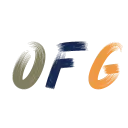

<div class="container-fluid d-flex flex-row footer">
  <div class="col-2 d-flex align-items-center justify-content-center social-media-wrapper">
    <button class="btn btn-outline-primary social-media-button" id="linkedin-button" aria-label="My LinkedIn"
      onclick="window.open('https://www.linkedin.com/in/ofont99')">
      
    </button>
    <button class="btn btn-outline-primary social-media-button" id="github-button" aria-label="My Github"
      onclick="window.open('https://github.com/oscarfont')">
      
    </button>
  </div>
  <div class="col d-flex align-items-center justify-content-center" style="gap:0.5rem">
    
    <span class="license-text">
      Software under GNU v3 license
    </span>
  </div>
  <div class="col-2 d-flex align-items-center justify-content-center">
    
  </div>
</div>